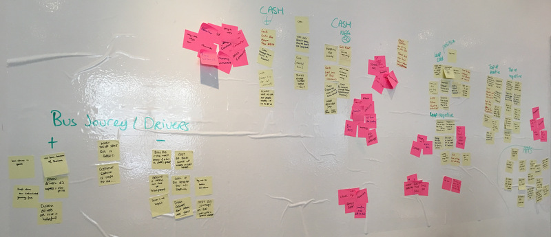
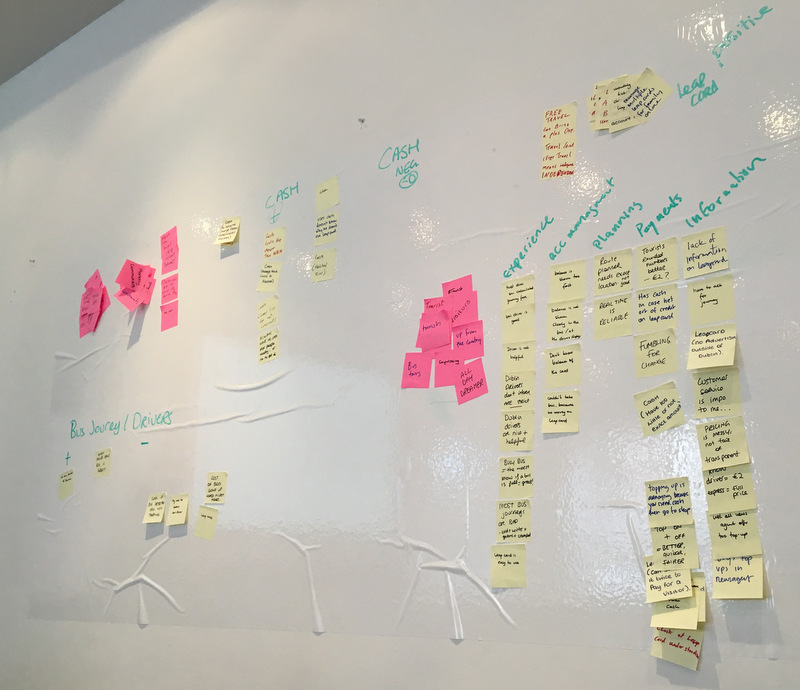
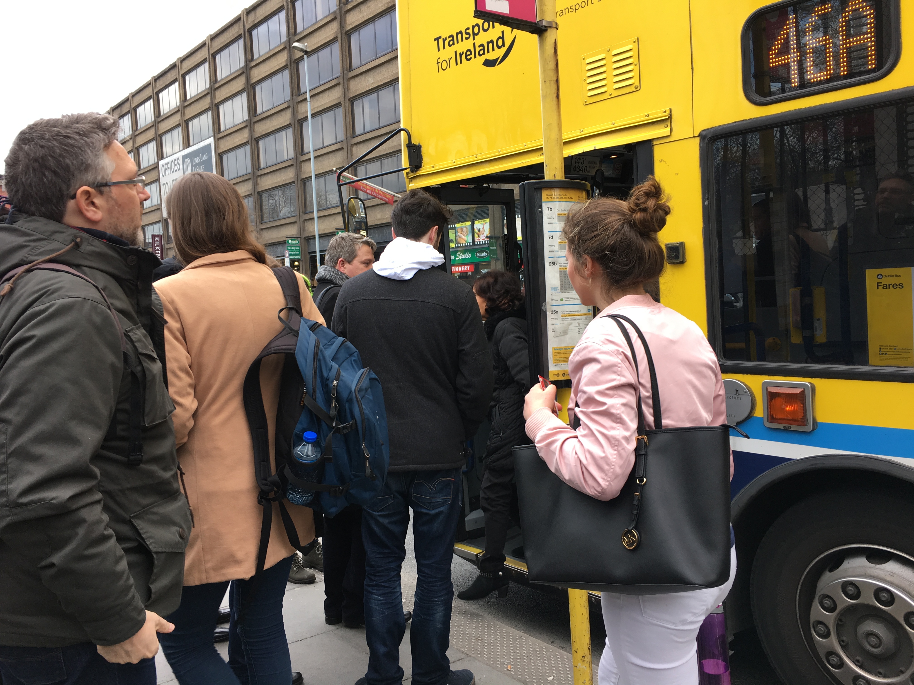
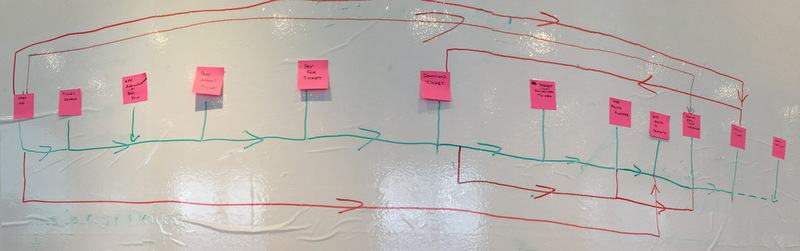

UX Agile Workshop - Dublin Bus Service
After successfully completing a basic UX Foundation course with UXTraining.ie in early 2016, I decided to join their Agile UX onsite workshop in Dublin in April '16. To the left you see a picture, which is probably what my face looked like when I arrived in Dublin at the airport, trying to find out, how on earth to get into the city center.
In the email prior to the workshop, the company had send an email with directions for travel, weather and co, however if using the bus, it was already advised to make notes, as this would become the main subject of the workshop - Dublin Bus Service!
I was totally overwhelmed with the choice of coaches at the airport, however it was not clear where the buses would go in detail, and therefore was not clear to me, if they go anywhere close to the hotel I had booked. Long story short, I ended up asking at the 'Tourist Information' on how to get into town. They were very helpful, and I ended up taking public transport - Dublin bus - rather than a coach.
As I had not recently travelled to Germany I didnt had any small Euro coins, and getting money from the ATM did not help in that situation either. I got the banknot changed to have a few 1-euro coins, and I thought this should help to not annoy the bus driver when buying the ticket. Soon I learned why the Dublin Bus service was the topic for this workshop and why not having exact change would not be a problem.
Research
This was a two day workshop, and the main focus of it would be the first two stages of the design process, Research or identifying problem stage and the Design - solving the problem stage. The first exercise of the workshop was to interview people who use the Dublin bus service and to understand the business and business goals, as well as identify problem and constraints and to define success. If you would ask me what I remember from this workshop the most, it was the interviews! I just loved the interaction with the user, which is probably why I was working so many years in customers support ;) By the way, in the whole workshop were 9 or 10 participants and we were split in three groups of 3 or 4. For the interviews we decided who would ask the user questions and who would make notes of the feedback and answers. This activity was switched around the team, so everyone would be able to interview one person.
The notes I kept from the interview were with the people who daily used the bus and shown, that a leap card, monthly 20-day ticket or cash were used. However the leapcard as well as paying cash bringing ups and downs withit.
After the interviews we summarized what we had learned, pain points and oppportunities. We used the affinity diagram method to build our user personas. At first we individually wrote down the different users of the Dublin Bus and their behaviours (on pink sticky notes). Afterwards we wrote down what they doing for ticketing (yellow sticky notes), why they are doing that, issues or conncers. We then analysed again as a team and sorted the pink and yellow notes and organised them into logical groups.
The board looked like this:
The next step was to pick one group of users and place the yellow sticky notes which applied to that user and name the diagram.
The final board looked like this:
The last exercise of that day, was to try out the bus service ourselfs, which I most enjoyed, as I had no knowledge of the city, nor the bus routes, prices etc. I was personally was given a leapcard for that test.
In the picture below you can see, how we trying to get on the bus. And yes, I know, in my first project I wrote that I am not the user. Well in this case, I kinda was (being a tourist in Dublin) and it was good to see at first hand, with what the people struggle with as we learned in the interviews. I quickly learned what it meant, not knowing if I had money on the card, as in that case I did not, and to quickly think on my feet and trying to get the 'exact fare' for the ride, as this is exactly what I had experienced back at the airport.
Dublin Bus operates an 'exact fare' policy, which means, if you do not have the exact fare and overpay, a 'change ticket' is being issued and that can then be exchanged at the head office in Dublin somewhere. Very userfriendly (especially as a tourist) - NOT!
Also, trying to find out the bus routes was impossible, and having no real bus time available again did not help. We managed to get on a bus, buy a ticket, however not successful with finding the destination which was given to us!
We left the bus somewhere in the city and walked back to our hotels, and on the way we found a shop where people are able to top-up their leap cards. However, I was not successful in doing so and remained with a not-usable leap card.
Design
Second day started with creating our User Persona. This gave us a shared understanding and helped to focus on problem solving.

Followed creating the user persona (we picked the 'Tourist' user persona), we started writing down future scenarions, or also called stories. This helped us to see the bigger picture and communicate a vision. Again, it creates a commmon understanding and builds empathy.
The structure of a story is to give it some context (physical / social environment), a plot (goals, challenges, actions, decisions, information), tools (what the user uses to help achieve their goals) and an outcome (the result of customer using the product).

We also worked together as a team and identified story elements, such as End goals, Behaviours and Challenges. For our tourist the end goal for example would be to get to all main attractions in the city, good value for money and have either one ticket or app ticket for all purposes.

In the last two tasks in this workshop we at first identified product features and interactions and later mapped them out in the flow.

This is the flow with just the interaction mapped, and in the next and final step we did add some interface design as sketches (final picture in work atm).
Conclusion
Fantastic onsite course in Dublin. Our course trainer Colman was great, many many years in UX Design, I have to say I learned a lot and got more confident that the field of UX is for me. I realised already at this workshop, that I still love the interaction with the user and that Research or or later Usability Test are the most interesting fields for me. At the time of this workshop, I had already started my 6 months online training , however I was now even more sure that I wanted to make a career as UX designer. Oh, and not to forget, there is a lot Dublin Bus could do for better User Experience, especially for tourists!